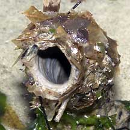
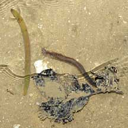
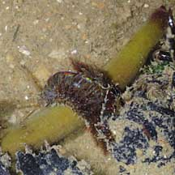
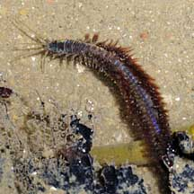
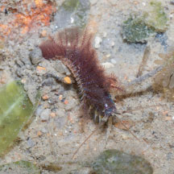
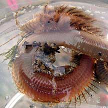
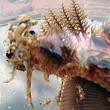

|
|
| worms text index | photo index |
|
worms > Phylum Annelida >
Class Polychaeta
|
| Solitary
tubeworm Diopatra sp.* Family Onuphidae updated Oct 2025 Where seen? Like rubber hoses sticking out of the ground, the sturdy tubes of this worm are commonly seen on all our shores including sandy shores near seagrass areas and soft silty areas near mangroves. The tubes are usually spaced apart from one another. What are solitary tubeworms? Solitary tubeworms are segmented bristleworms belonging to the Family Onuphidae, Class Polychaeta, Phylum Annelida. The polychaetes include bristleworms, and Phylum Annelida includes the more familiar earthworm. Most members of the Family Onuphidae build tubes. Some of them carry the tubes around, others are stationary but can leave their tubes. Not all tubeworms are polychaetes and not all polychaetes are tubeworms. More about tubeworms in general. Features: The solitary tubeworm makes a tube 1cm in diameter. The tube can be quite long, but usually only about 10cm of this is sticking out of the surface. The tube is tough, thick and leathery. Only the portion of the tube that sticks out of the ground is usually reinforced with bits and pieces (sand, shells, bits of wood). The tube is usually curved, with the opening facing down towards the surface. The lower portion of the tube that buried in the ground is thin and papery. This is more obvious if you look at a tube that has been washed ashore. One or two large leaves or large shells are usually added near the tube opening. Some suggestions for the ornamentation of these tubes are that it helps the worm differentiate between harmful predators and food. According to Leslie Harris, Diopatra is the only genus in the Family Onuphidae with feathery appendages (branchiae with spiraled filaments around a central stem). Michell Ng shares that the one she saw on Changi on a sandy stretch was spinning in the water, making figure 8 shapes. After taking the photos, when she released it, it proceeded to burrow into the sand. What do they eat? Some sources suggest Onuphid worms are scavengers that will eat dead animals or plants. Others suggest Diopatra are predators that ambush prey from their tubes that seize passing prey with teeth and immobilise them with large tentacle-like appendages on their heads. Singapore tubeworm: One species of Solitary tubeworm, Diopatra bulohensis, is named after our very own Sungei Buloh! |
 Thick leathery tube Chek Jawa, Jan 06 |
 Tube washed ashore Changi, Aug 05 |
 Changi, Jul 04 |
 Reaching out to grab a mangrove propagule. Pasir Ris Park, Apr 10 |
 Got it! |
 A closer look at the worm. |
*Species are difficult to positively identify without close examination.
On this website, they are grouped by external features for convenience of display.
| Solitary tubeworms on Singapore shores |
On wildsingapore
flickr
|
| Other sightings on Singapore shores |
 Changi Point, Nov 25 Shared by Marcus Ng on facebook. |
 Changi, Nov 08 |
 Photos shared by Michell Ng. |

| Acknowledgement With grateful thanks to Leslie H. Harris of the Natural History Museum of Los Angeles County for comments on this worm and identification of the worm out of the tube! Links
|